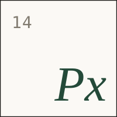

The future org chart has fewer routers and more reviewers.
You do not get agent leverage by buying a tool. You get it by making the business readable.
Same brand, same record, same floor — however you engage.
Agents write code, draft PRDs and run QA. Mission Control is where people review, approve, assign and resolve — every change mirrored to SharePoint and fully audited.
Agents produce; people decide — and the record never forks.
The Portal is the operational plane for PLX — the customer and colleague interface for everything we do.
Customers and colleagues meet on one product — and one brand.
Department nodes and their MCPs ladder up to cross-functional MCPs and central compute — which power our cloud production code and agentic layer.
Every node ladders up to one compute core — on one shared floor.
We have three active engineering surfaces — Mission Control, the Portal, and the Shared Context Layer — that must share one brand, one governance model, and one traceable record. The opportunity is speed with accountability, not speed without it.